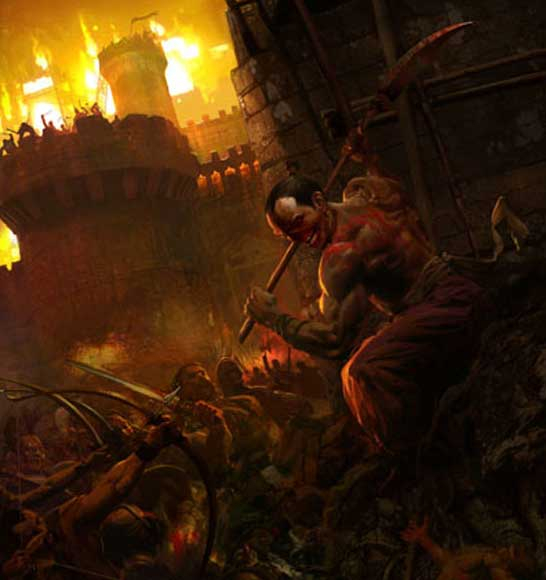

Bestial
Nella ricerca spasmodica
di creare sperimentalmente una razza superiore che, al servizio delle fazioni
umani, potesse contrastare la superiorità dei drow, gli scienziati della Società
della Scienza di Pergar sono riusciti nella creazione di un essere dalla grande
potenza ma dal difficile controllo. Umanoidi dalla forza e resistenza
eccezionale, i Bestial possono essere creati solo in laboratorio a seguito di un
processo genetico operato con metodo scientifico coadiuvato da magia
negromantica. Sebbene dotati di apparati riproduttivi funzionanti tali creature
sono, infatti, sterili. Hanno nel loro sangue geni della razza umana mescolati a
geni di orchi selezionati e trattati per essere recessivi onde evitare la
creazione di creature fisicamente troppo evidenti. Le loro sembianze sono
fondamentalmente umani ma il viso ha forti tratti caratteristici umanoidi che lo
deformano spesso in ghigni spaventosi.

Limiti
di classe per la razza:
Fighter 12° livello
Cleric
(Azatar)
Adoratore del Sangue 11° livello
Thief 8° livello
Possibilità di multi-classe:
Come gli umani possono divenire solo dual-class
Allineamenti consentiti:
Qualsiasi non good
Categorie di età :
Base Age 14 + 1d4
Childhood
1-12 years
Adolescence
13-16 years
Adulthood
17-39 years
Middle Age*
40-54 years
Old Age**
55-79 years
Venerable Age***
80 + years
Maximum
Age
80 + 1d10 years
Dimensioni e peso :
Si considerano creature Medium.
L’altezza è pari a 150 (135 per le femmine che sono rarissime in quanto quasi sempre scartate nella selezione) + punteggio di costituzione + 4d10 cm. E il loro peso è uguale a 80 (65 per le femmine) + punteggio di costituzione + 2d8 kg.
Punteggi di Abilità :
Bonus: +
2 forza, + 1
costituzione
Malus: – 1 intelligenza, – 1 saggezza, - 2
carisma
Inoltre i limiti minimi e massimi sono i seguenti :
|
Abilità |
Punteggio Minimo
Razziale |
Punteggio Massimo
Razziale |
|
Forza |
14 |
19 |
|
Intelligenza |
3 |
16 |
|
Saggezza |
3 |
1 |
|
Costituzione |
12 |
18 |
|
Carisma |
3 |
12 |
|
Destrezza |
6 |
18 |
Bestial
thieving ability adjustments :
Ability Modifier
Pick Pocket -5%
Open Lock none
Find/Rem.
Trap
none
Move Silently none
Hide in Shadows none
Detect Noise +10%
Climb Wall +5%
Read Languages -10%
Caratteristiche speciali :
Deathless
:
Combat Fury : Le manipolazioni mentali subite dai Bestial per renderli combattenti senza paura hanno inciso profondamente sulla loro sanità mentale e capacità di intendere e volere in combattimento. Per tale motivo tutti i bestial applicano la regola sulla furia prevista dal talento dei berserker "furia di combattimento" (vedi) senza ottenere, però, il bonus costante alla Tach0 ed ai danni previsti dal talento stesso (ossia quello che si applica indipendentemente dallo stato d'ira), ciò a meno che, ovviamente, costoro non appartengano alla classe dei berserker. Se un bestial appartiene alla classe dei berserker, inoltre, costui riceverà a tutte le prove di saggezza previste dal talento dei berserker "furia di combattimento" un'ulteriore cumulativa penalità di -1.
I Bestial devono raggiungere un ammontare di punti esperienza pari al 134% di quelli che dovrebbero normalmente raggiungere per la classe scelta.